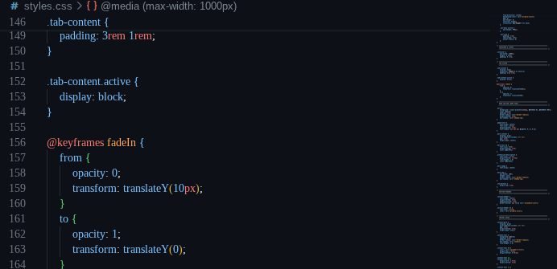

ss
Software Engineer
Software engineers design, develop, and maintain software applications and systems. They work in various industries, including technology, finance, healthcare, and more. Software engineers collaborate with cross-functional teams to create innovative solutions that meet user needs and drive business success. Alternatively, they may specialize in making software for the general public for entertainment, such as video games, video sharing platforms, or general social media platforms.

Screenshot of the code of this site
What They Do
Software developers are the creative minds behind computer programs. Some develop the applications that allow people to do specific tasks on a computer or another device. Others develop the underlying systems that run the devices or that control networks.
Key Responsibilities:
- Analyze users’ needs and then design, test, and develop software to meet those needs
- Recommend software upgrades for customers’ existing programs and systems
- Test and debug software to ensure it functions correctly
- Collaborate with cross-functional teams to create innovative solutions

Software developer working in an office environment
Work Environment
Most software engineers work in offices, remotely, or in hybrid settings. Their day usually involves computer-based work, team meetings, and collaboration with colleagues from product, design, and quality assurance.
Environmental Characteristics:
- Work setting (indoor/outdoor, office/field): Indoor office, remote, or hybrid environments.
- Typical hours and schedule: Full-time, often around 40 hours per week, with occasional evenings or weekends during software releases.
- Physical demands: Primarily sitting and screen time; strong focus, problem solving, and communication are essential.
- Travel requirements: Limited travel; usually local meetings, occasional conferences, or client visits.

Young woman working from home
Pathway: How to Become One
Becoming a software engineer typically begins with strong computer science fundamentals, practical programming experience, and real projects. A bachelor’s degree is common, though hands-on work and a strong portfolio also matter to employers.
Steps to Enter This Career:
- Graduate from high school with a focus on math and computer science courses.
- Earn a bachelor’s degree in computer science, software engineering, or a related field.
- Learn key programming languages such as Python, Java, JavaScript, and SQL.
- Complete internships, coding boot camps, or personal software projects to build experience.
- Develop a portfolio of applications, websites, or contributions to open-source projects.
College students in a computer science class
Pay & Benefits
Software engineers earn strong pay and often receive a wide range of workplace benefits. Compensation depends on experience, industry, location, and the size of the employer.
Compensation Information:
- Median annual salary: $126,830 (May 2023, Bureau of Labor Statistics).
- Entry-level salary range: $70,000 to $90,000.
- Experienced professional salary range: $110,000 to $160,000+.
- Common benefits: Health insurance, retirement plans, paid time off, and flexible schedules.
Additional Compensation:
Many employers offer signing bonuses, performance bonuses, stock awards, tuition reimbursement, and support for professional certifications.

A photograph of US American Currency
Job Outlook & Area Data
The software engineering field is growing rapidly as companies continue to adopt mobile apps, cloud computing, and artificial intelligence. Demand is strongest where technology and data-driven industries are concentrated.
Job Market Information:
- National job growth outlook: 25% growth from 2022 to 2032, much faster than average.
- State-specific job opportunities: High demand in California, Washington, Texas, New York, and Massachusetts.
- Regional concentration: Strong hiring in Silicon Valley, Seattle, Austin, Boston, and the Research Triangle.
- Demand trends: Growth driven by cloud computing, mobile applications, cybersecurity, and machine learning.
Future Prospects:
Software engineers should expect continued opportunities as businesses modernize systems, build new digital products, and protect data from cyberthreats.

Job outlook
More Information & Resources
Below are vetted resources and links for further research into this career. Include a link to a related article about college or the world of work.
External Resources:
Software Developers - Occupational Outlook Handbook
Official career profile with salary, job duties, and growth data.
Computer and Information Technology Occupations
Broad information about technology careers and industry trends.
Career Outlook
Guidance on choosing a career path and preparing for the world of work.
Pathful Career Exploration
Pathful Career Exploration Software Development Page
Scan the QR code below to access the full Google Doc with my citations.
My Career Goals
Reflect on your own career aspirations related to this profession. What are your personal goals and how does this career align with your interests and values?
Short-Term Goals (1-2 years):
- Build and maintain a strong portfolio of programming projects.
- Complete computer science coursework and coding certifications.
- Gain real experience through internships, school projects, or part-time work.
Long-Term Goals (5-10 years):
- Earn a software engineering position at a technology-focused company.
- Lead development projects and mentor others on a software team.
- Create software that improves user experiences and solves real problems.
Personal Reflection:
This career appeals to me because I enjoy solving problems with technology, building apps that help people, and working on teams to create products. I plan to use my interest in coding, attention to detail, and creative thinking to earn the training and experience needed to succeed in software engineering.
Resume
Below is an embedded PDF of my resume. This document highlights my education, skills, and experiences relevant to my career goals.